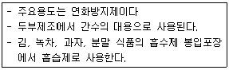
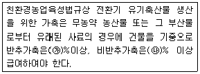

유기농업기사 (2007-03-04 기출문제)
1과목: 재배원론
1. 다음 중 가지의 굴곡유도, 낙과방지, 과실의 비대와 성숙을 촉진하는 식물 생장조절제는?
- 지베렐린
- 오옥신
- 사이토카토닌
- 프로리겐
(정답률: 알수없음)

2. 식물의 [지리적 미분법]을 제창한 사람은?
- DE CANDOLLE
- VAVILOV
- C.O.MILLER
- DARWIN
(정답률: 알수없음)
3. 밭작물 생육에 가장 적합한 토양의 수분항수(水分恒數)는?
- 최대용수량
- 최소용수량
- 풍건상태
- 건토상태
(정답률: 77%)
4. 식물이 한 여름철을 지낼 때 생장이 현저히 쇠퇴. 정지. 하고 심한 경우 고사하는 현상은?
- 하고현상(夏枯現象)
- 좌지현상(挫止現象)
- 저온장해(低溫障害)
- 추고현상(秋枯現象)
(정답률: 알수없음)
5. 녹체 춘화형 식물들로만 나열된 것은?
- 추파맥류, 봄 올무
- 봄 올무, 양배추
- 양배추, 히요스
- 히요스, 잠두
(정답률: 알수없음)
6. 연작에 의한 기지현상이 가장 심하여 10년 이상 휴작을 요하는 작물은?
- 아마, 인삼
- 수박, 고추
- 시금치 .생강
- 감자, 땅콩
(정답률: 알수없음)
7. 맥류의 내동성이 저하되는 경우는?
- 전분함량이 많을 때
- 친수성 교질이 많을 때
- 단백질에 -SH가 많을 때
- 칼슘이온이 많을 때
(정답률: 알수없음)
8. 작물의 도복을 방지하기 위한 대책이 아닌 것은?
- 인산, 칼슘, 규산 사용량을 늘린다.
- 2,4-D를 처리한다.
- 질소를 추가로 사용하여 생산량을 크게 한다.
- 키가 작고, 대가 강한 품종을 선택한다.
(정답률: 알수없음)
9. 위조저항성 및 휴면아 형성과 관련 있는 호르몬은?
- ABA
- GA
- Etylene
- Auxin
(정답률: 알수없음)
10. 토양의 ph가 1단위 감소하면 수소이온의 농도는 몇 % 증가 하는가?
- 1%
- 10%
- 100%
- 1000%
(정답률: 알수없음)
11. 품종의 내병성 설명으로 틀린 것은 ? 다
- 병균에 대한 품종간 반응이 다르다.
- 질소질 과용과 진딧물은 발병 요인이 된다.
- 환경요인에 의해서는 이병화가 거의 없다.
- 병원균은 분화된다.
(정답률: 알수없음)
12. 배(胚)를 구성하는 요소들로만 나열된 것은?
- 유아, 떡잎, 배축, 유근
- 종피, 주심, 배젖, 배축
- 주심. 배젖. 유아, 유근
- 유아, 떡잎, 배주, 유근
(정답률: 60%)
13. 다음 중 성 표현의 조절작용을 하는 식물 호르몬은?
- CCC
- 에틸렌(Ethylene)
- Amo-1618
- Rh -531
(정답률: 알수없음)
14. 작물의 내건성(drought tolerance)은 생육시기에 따라 다른데, 다음 중 화곡류의 생육시기별 내건성 설명으로 옳은 것은?
- 생식세포의 감수분얼기에 가장 약하고, 분얼기에 그 다음으로 약하며, 유숙기에 비교적 강하다.
- 분얼기에 가장 약하고, 생식세포의 감수분얼기에 그 다음으로 약하며, 유숙기에 비교적 강하다.
- 출수개화기에 가장 약하고 생식세포의 감수분얼기에 그다음으로 약하며, 분얼기에 비교적 강하다
- 생식세포의 감수분얼기에 가장 약하고, 출수개화기와 유숙기에 그 다음으로 약하며 분얼기에는 비교적 강하다.
(정답률: 알수없음)
15. 벼의 출수생태를 올바르게 설명한 것은?
- 벼에서 감광형은 묘대일수 감응도가 낮고, 만식 적응성 도 크다
- 조기수확을 목적으로 조파조식 할 때는 감광형이 알맞다
- 조파조식 할 때보다 만파만식 할 때에 출수기 지연 정도는 감광형이 크다
- 일반적으로 적도와 같은 저위도지대에서 감온성이 큰 것은 수확량 증대에 유리하다.
(정답률: 알수없음)
16. 식물분류학적 방법에 의한 작물 분류가 아닌 것은?
- 벼과식물
- 콩과작물
- 가지과 작물
- 공예작물
(정답률: 90%)
17. 야간조파에 가장 효과가 큰 광의 파장은?
- 400nm 부근의 자색광
- 480nm 부근의 청색광
- 520nm 부근의 녹색광
- 650nm 부근의 적색광
(정답률: 37%)
18. 감자(뿌리작물)의 수량계산 공식으로 옳은 것은?
- 단위면적 당 식물체 수 × 식물체 당 덩이줄기 수 × 덩이줄기의 무게
- 단위면적 당 덩이줄기 × 식물체 당 무게
- 단위면적 당 식물체 수 × 단위면적 당 덩이줄기 수
- 식물체 당 무게 × 단위면적 당 식물체 수
(정답률: 알수없음)
19. 다음 중 고구마를 저장할 때 가장 좋은 방법은?
- 움 저장
- 굴 저장
- 상온 저장
- 냉온 저장
(정답률: 73%)
20. 다음 중 작물을 생육적온에 따라 분류했을 때 저온작물인 것은?
- 콩
- 벼
- 감자
- 옥수수
(정답률: 알수없음)
2과목: 토양비옥도 및 관리
21. 석회질토양에서 인산의 고정에 밀접하게 관계하는 원소는?
- AI
- Fe
- Mn
- Ca
(정답률: 알수없음)
22. 다음 침식의 형태 중 일시에 토양의 유실이 가장 많이 일어날 수 있는 것은?
- 표면침식
- 우곡침식
- 우적침식
- 계곡침식
(정답률: 60%)
23. 전형적인 농경지에 서식하는 미생물 중 가장 작고 종류가 많은 것은?
- 세균
- 곰팡이
- 조류
- 선충
(정답률: 100%)
24. 2:1 격장형 점토광물 표면이 영구적 음전하를 갖게하는 작용은?
- 동향치환작용
- 가수분해 작용
- 산화환원 작용
- 이온의 수화작용
(정답률: 알수없음)
25. 다음 중 부식의 주요 효과로 볼 수 없는 것은?
- 토양의 보수력 증대
- 토양의 완충작용 증대
- 양분의 유효화
- 탄비질의 증가
(정답률: 60%)
26. 다음 중 퇴적암의 과반수를 차지하고 있는 암석은?
- 혈암
- 사암
- 석회암
- 천매암
(정답률: 42%)
27. 다음 중 1:1 격자형 정토광물로만 연결된 것은?
- Vermiculite, Halloysite
- Halloysite, Mica
- mica, Smectite
- Halloysite, Kaolinite
(정답률: 70%)
28. 토성을 나타내는 기호 중 “미사질 식양토”는?
- SiL
- SiCL
- L
- CL
(정답률: 알수없음)
29. 토양분류시 특정 토양의 특성을 나타내는 최소의 시료채취 단위(최소용적의 단위체)를 나타내는 용어는?
- Polypedon
- Landscape
- Pedon
- Soil Individual
(정답률: 알수없음)
30. 습지난 호수에 식물 유체가 쌓여 생성된 토양은?
- 이탄토
- 수적토
- 운적토
- 붕적토
(정답률: 84%)
31. 염해지토양의 개량방법으로 가장 적절하지 않은 것은?
- 물로 염분을 세척한다.
- 암거배수를 한다.
- CaSO4를 시용한다.
- 유기물을 시용한다.
(정답률: 알수없음)
32. 지표면 가까이 까지 수분으로 포화된 토양의 통기성을 증가시키는 방법으로 가장 적합한 것은?
- 토양가열
- 유기물 첨가
- 지하수위 저하
- 플라스틱 멀칭
(정답률: 알수없음)
33. 부식이 집적이 가장 잘 이루어 질수 있는 토양은?
- 저온 다습한 토양
- 배수 양호한 토양
- 호기성 미생물이 많은 토양
- 지하수위가 낮은 토양
(정답률: 40%)
34. 공기유통이 양호한 밭 토양에서 식물이 흡수할 수 있는 질소의 주요 형태는?
- NO3-
- NH3
- (NH2)2CO
- N2O
(정답률: 80%)
35. 다음 미량원소 중 토양반응이 알카리쪽으로 기울때 유효도가 높아지는 것은?
- Mo
- Fe
- Zn
- Co
(정답률: 알수없음)
36. 점토광물을 분쇄하면 양이온치환용량(CEC)이 증가하는 가장 큰 이유는?
- 동형치환이 많이 이루어지기 때문이다.
- 잠시적 전하가 늘어나기 때문이다.
- 변두리 전하가 늘어나기 때문이다
- 표면전하 밀도가 높아지기 때문이다.
(정답률: 알수없음)
37. 다음 중 토양 중에 존재하는 종(종)이 가장 많은 균속은?
- Penicillium 속
- Aspergillus 속
- Pythium 속
- Monosprium 속
(정답률: 알수없음)
38. 논토양을 미리 풍건처리 한 후에 담수 보온 처리하게 되면 무처리구에 비하여 어떤 유효양분의 생산성이 높아지는가?
- 유효태 인산
- 유효태 칼슘
- 유기태 질소
- 암모늄태 질소
(정답률: 46%)
39. 식품의 필수원소 중 주로 토양성분 중에서 공급받는 원소 가 아닌 것은?
- 황
- 탄소
- 질소
- 마그네슘
(정답률: 28%)
40. 일반적으로 온대기후 조건의 목초지 및 초원지대에서 두꺼운 암색(暗色) 표층을 갖는 토양목은?
- ultisol
- spodosol
- alfidol
- mollisol
(정답률: 30%)
3과목: 유기농업개론
41. 다음 중 퇴비 더미에서 암모니아 가스가 발생하기 가장 용이한 조건은?
- ph 3.0 이하
- ph 5.5 이하
- ph 7.0
- ph 8.0 이상
(정답률: 50%)
42. 현재 우리 농민들이 많이 사용하고 있는 시설의 기초 피복재는?
- 염화비닐필름
- 종이초산필름
- 경질폴리에스테르필름
- 폴리에틸렌필름
(정답률: 54%)
43. 다음 중 농작물이 흡수하는 무기물의 형태로 옳은 것은?
- P2O2
- NH4+
- Ca3(PO4)2
- H3PO4-
(정답률: 67%)
44. 벼 종자 소독시 냉수온탕침법을 실시할 때 온탕에 이용할 물의 온도로 가장 적절한 것은?
- 15도
- 25도
- 35도
- 55도
(정답률: 알수없음)
45. 다음 유기농업 허용자재 중에서 병해충의 방제효과가 가장 낮은 것은?
- 제충국
- 데리스
- 페로몬
- 목탄
(정답률: 40%)
46. 다음 중 해당 해충의 천적에 대한 설명으로 틀린 것은?
- 나방류의 천적은 일벌이다.
- 진딧물의 천적은 콜레마니진딧물이다.
- 청벌fp의 천적은 호랑나비이다.
- 온실가루이의 천적은 온실가루이좀벌이다.
(정답률: 알수없음)
47. 우리나라에서 유기축산을 실시하기가 가장 어려운 축산업 규모는?
- 겸업축산
- 소규모 축산
- 기업축산
- 부업축산
(정답률: 알수없음)
48. 병해충 방어막으로서의 다양한 생태계 창출을 위하 대안으로 틀린 것은?
- 윤작체계를 확립함으로써 단작체계하에서 재배되는 작물보다 병해충 피해를 줄일 수 있다.
- 주작물의 사이사이에 다른 종류의 간작을 실시하면 그곳이 천적의 서식공간으로 활용되어 병해충제어에 기여한다.
- 익충들이 특히 좋아하는 유인작물을 경작지 둘레에 울타리같이 재배하여 생태계의 섬을 만들어 줌으로서 병해충제어 효과를 높인다.
- 경작지 내외의 잡초를 깨끗하게 제거하기 위하여 제초제를 살포함으로써 병균이나 해충의 서식처를 원천적으로 봉쇄해 버리는 것이 좋다.
(정답률: 알수없음)
49. 유기축산물 생산을 위한 유기사료의 섬유질 상료에서 조섬유 함량은 몇%정도가 적당한가?
- 5% 이상
- 10 % 이상
- 15 % 이상
- 25 % 이상
(정답률: 30%)
50. 친환경농업을 실천하는 농가에서 사용하는 부산물 비료 중 잘소질 성분이 가장 낮은 것은?
- 계분
- 우분
- 콩깨묵
- 피마자막
(정답률: 알수없음)
51. 다음 중 유기농업의 병해충 제어를 위한 경종적 제어 방법이 아닌 것은?
- 품종의 선택
- 윤작
- 기생성 곤충
- 생육기의 조절
(정답률: 알수없음)
52. 다음 중 유기양돈 시설로 많이 사용되는 돈사 형태는?
- 무창 돈사
- 페쇄식 돈사
- 톱밥발효 돈사
- 케이지식 돈사
(정답률: 알수없음)
53. 다음 중 육종에 가장 짧은 기간을 요하는 것은?
- 사과나무
- 배나무
- 자두나무
- 벼
(정답률: 알수없음)
54. 다음 중 채소 재배시 식물체의 질산염 축적에 영향을 주는 가장 큰 요인은?
- 축분 위주의 유기물 시용
- 채소의 종류
- 광도부족
- 과다한 토양수분
(정답률: 알수없음)
55. 다음 중 유기퇴비 검사에 대한 설명으로 틀린 것은?
- 관능적 방법은 발효가 끝난 퇴비의 형태, 색깔, 고유한 냄새를 검사하여 판단하는 것이다
- 화학적 방법은 탄질률 검사법과 ph 검사법이 있다.
- 생물학적 방법은 부로 부숙이 완료된 사료에 지렁이를 넣어 그 행동을 보고 판단하는 것이다
- 물리적 방법은 유해물질에 민감한 어린 묘를 부숙이 완료된 시료에 심은 후 유식물을 물리적으로 분석하여 판단하는 것이다.
(정답률: 64%)
56. 유기농업에서 종자를 선정할 때 적합하지 않은 것은?
- 건실한 종자
- 유기종자
- 화학약제로 소독한 종자
- 오염되지 않고 고품질 종자
(정답률: 100%)
57. 벼 재배시에 알맞은 헤어리베치 녹비의 10a 당 적정 사용량은?
- 100-200kg
- 300-500kg
- 800-1000kg
- 1500-2000kg
(정답률: 46%)
58. 시설의 온도관리에 대한 설명 중 가장 합리적인 것은?
- 주 . 야간 모두 낮게 관리한다.
- 주간은 높고 야간은 낮게 관리한다.
- 주 . 야간 모두 높게 관리한다.
- 야간에 온도를 높게 관리하다.
(정답률: 알수없음)
59. 가축의 교배방법 중에서 잡종강세 효과가 가장 많이 나타나는 교배방법은?
- 순종교배
- 근친교배
- 계통교배
- 품종간 교배
(정답률: 알수없음)
60. 잡종강세에 대한 설명으로 틀린 것은?
- 잡종강세는 F3에서 가장 크게 발현된다.
- 다른 계통간의 교잡을 시키면 우수한 형질이 나타난다.
- 잡종강세 식물은 외계의 불량조건에 대한 저항력이 강한 경향이 있다.
- 잡종강세 식물은 생장발육이 왕성하다.
(정답률: 75%)
4과목: 유기식품 가공.유통론
61. 천연첨가물 중 폴리리신(polylysine)에 대한 설명으로 잘못된 것은?
- 방선균의 배양액으로부터 분리한 것으로 계면활성 성질을 가진 보존료이다.
- 리신이 결합된 직쇄상의 폴리펩타이드이다.
- 흡수성이 강한 엷은 황색의 분말로 약간 쓴맛을 가지고 있다.
- ph가 산성일 대만 향균력이 나타나므로 과실을 이용한 가공품에만 사용한다.
(정답률: 알수없음)
62. 찰옥수수는 일반 옥수수에 비해서 젤화가 잘 일어나지 않고 걸쭉한 상태를 나타내는데 이는 찰옥수수의 어떤 성분 때문인가?
- 단백질
- 아밀로펙틴
- 수분
- 포도당
(정답률: 알수없음)
63. 식품과 관련된 위해인자의 설명으로 틀린 것은?
- 유기염소계 살충제는 염소를 함유하고 있으면서 강력한 살충효과를 나타내지만 분해기간이 길어 자연에 오랫동안 잔류한다.
- 주석은 통조림 용기의 도금에 가장 많이 사용하고 있으며 PVC의 안정제로 octyl 주석이 사용된다.
- 다이옥신은 염화비닐 등 염소가 들어간 물질을 불완전 연소시켜야 배출이 억제된다.
- 카드뮴은 일본에서 이타이이타이병을 일으킨 물질로 중독되면 골연증이 유발된다.
(정답률: 75%)
64. 레토르트 포장기법에 대한 설명으로 틀린 것은?
- 고온살균을 하므로 재질의 특성은 높은 살균온도에 견디는 내열성이 중요하다
- 식품의 유통기한은 산소의 투과에 의한 품질변화에 의하여 결정된다.
- 식품을 포장하고 고온고압에서 살균한 후 밀봉한다.
- 외부와 내부는 폴리에스테르의 얇은 막으로, 중층은 알루미늄박으로 되어있다.
(정답률: 알수없음)
65. 다음 중 유기가공식품에 사용하는 원료에 대한 설명으로 틀린 것은?
- 동일 원재료에 대해서 유기농산물과 비유기 농산물을 혼합한 경우에는 함량을 표기해야 한다.
- 방사선 조사 처리된 원재료를 사용하여선 아니 된다.
- 유전자재조합 식품 또는 식품첨가물을 사용하거나 검출되어서는 아니 된다.
- 당해 식품에 사용하는 용기 .포장은 재활용이 가능하거나 생물 분해성 재질이어야 한다.
(정답률: 60%)
66. 틈새시장(niche market)의 특성과 거리가 먼 것은?
- 시장세분화 단계에서 미개척 분야를 파고드는 전략이다.
- 경쟁 구도가 잡혀있는 시장에 진입하는 것이다
- 소비자의 기호가 다양해지면서 틈새시장의 전략적 채택이 증가하고 있다.
- 틈새시장을 개척하기 위해서는 차별화된 제품이나 독특한 유통방법 등 특화된 영역이 창출되어야 한다.
(정답률: 알수없음)
67. 친환경농산물 그린마케팅 믹스 4P's에 해당되지 않는 것은?
- Product
- Price
- Program
- Place
(정답률: 92%)
68. 다음 농산물도매시장에 대한 설명으로 가장 거리가 먼 것은?
- 기본원리는 거래총수 최대화의 원리에 대량보유의 원리에 입각한다.
- 소규모 분산적인 생산과 소비 간의 질적 양적모순을 조절한다.
- 중요한 기능은 수급조절기능 가격형성기능 배급기능 등이 있다.
- 농산물의 수집과 분산을 연결하는 중개기구이다.
(정답률: 알수없음)
69. Clostridium perfringens와 관계가 없는 것은?
- 아포를 형성하는 그림양성의 간균이다.
- 혐기적 환경에서만 증식하는 편성혐기성균이다
- 섭취직전에 완전히 재가열하더라도 식중독을 예방할 수 없다.
- 육류와 그 가공품을 위시하여 기금에 튀긴 식품 등에 증식한다.
(정답률: 50%)
70. 유기농 축산물의 유통에 있어서 콜드체인 시스템을 가장 잘 설명한 것은?
- 높은 유통마진을 추구하는 기업이 매장에서의 재고를 감소 시키기 위한 시스템이다
- 유기농 축산물의 신선도 유지와 장기 저장을 위한 급속예냉시스템이다.
- 유통 과정 중 농. 축산물의 변질 뷔페 등을 방지하기 위한 저온유통 시스템이다
- 동절기에 주로 생산되는 유기농 축산물에 대하여 동절기에 한하여 저온유통 시키는 시스템이다
(정답률: 알수없음)
71. 유기가공식품 제조가공을 위하여 사용할 수 있는 공보조제 중 설탕 제조시 탈수용 ph조정에 쓰이는 것은?
- 황산
- 탄산칼슘
- 염화칼슘
- 밀랍
(정답률: 39%)
72. 어떤 유기농산물의 생산자 수취가격이 2000원, 납품업체 공급가격이 2200원 소비자 지불가격 2500원 일 때 총 유통마진은?
- 10%
- 11%
- 20%
- 25%
(정답률: 62%)
73. 세균성 식중독의 예방법으로 바람직 하지 않는 것은?
- 식품과 접촉하는 도구는 세척과 소독을 철저히 한다.
- 식품을 종류별 가열전후 등에 따라 분리 보관한다.
- 저온 저장하여 균의 증식을 최대한 억제한다.
- 2차 감염을 철저하게 예방하기 위한 예방접종을 한다.
(정답률: 82%)
74. 근해산 해산어패류를 생식 하였을때 발생하는 패혈증의 원인균은?
- Morganella morganii
- Staphylococcus
- Vibrio parahaemolyticus
- Vibrio vulnificus
(정답률: 알수없음)
75. 국제식품규격위원회(CODEX)에 대한 설명으로 틀린 것은?
- FAO/WHO 합동식품규격 프로그램으로 운영되는 기구이다
- 규격(standard)만을 설정하며 지침(guideline)은 없다.
- 소비자의 건강을 보호하고 식품 교역시 공정한 무역 관행 확보를 목표로 한다.
- 총회는 2년에 한 번씩 개최된다.
(정답률: 64%)
76. 과실 및 채소류 냉장 저장시 고려해야 할 사항으로 잘못된 것은?
- 저장 중 호흡으로 인해 호흡열 발생으로 전자온도가 상승할 수 있다.
- 호흡속도가 빠를수록 저장기간을 연장할 수 있다
- 일부 과일의 경우 수확 후 일어나는 후숙을 저온 하에서 지연시킬 수 있다.
- 열대과일은 0도 이상에서 냉해가 일어날 수 있다
(정답률: 90%)
77. 식품 등의 표시기준상 유기식품은 해당 식품의 제조 가공에 사용한 원재료의 몇 % 이상이 친환경 농업육성법에 의하여 인증받은 것이어야 하는가?
- 50%
- 75%
- 80%
- 95%
(정답률: 알수없음)
78. 빵은 오븐에서 나온 후 시간이 지나면서 품질이 저하되는데 이러한빵의노화(staling)라고한다 이중 빵이 굳어지는 것은 밀 전분입자의 노화에 의한 것이라고 할 수 있다 이것을 방지할 수 있는 방법으로 적합하지 않은 것은?
- 미생물의 생육을 억제하기 위해 냉장 보관한다.
- amylose와 complex를 형성하도록 유화제를 첨가한다.
- 탈수제로 작용하는 설탕을 첨가한다.
- 80 도 이상에서 수분함량을 15% 이하로 급속히 제거한다.
(정답률: 알수없음)
79. 다음에서 설명하는 식품첨가물은?

- 겔화제(gelling agent)
- 과산화수소(hydrogen peroxide)
- 염화칼슘(calcium chloride)
- 글루콘산(gluconic acid)
(정답률: 알수없음)
80. 유기가공식품에 사용할 수입 곡류 원료가 수분18% 상대습도 85%, 온도 27도 조건으로 저장되고 있었다면 식품위생상 발생할 수 있는 위해는?
- 황색포도상구균의 번식과 엔테로톡신 생산
- 곰팡이의 번식과 곰팡이 독소 생산
- 살모넬라균에 의한 식중독
- 아질산과의 반응에 의한 발암물질 생산
(정답률: 37%)
5과목: 유기농업관련 규정
81. 친환경농업육성법규상 친환경농산물 인증기관의 지정취소 등 행정처분에 관한 사항으로 틀린것은?
- 사위 기타 부정한 방법으로 지정을 받은 경우에는 반드시 지정을 취소하여야 한다.
- 정장한 사유 없이 1년 이상 계속하여 인증을 행하지 아니한 경우에도 지정을 취소하거나 6월 이내의 기간을 정하여 그 업무의 정지를 명할 수 있다
- 농림부장관은 인증기관이 업무정지 명령에 위반하여 그 정지 기간 중 인증을 행한 때에는 그 지정을 취소할 수 있다.
- 인증기관의 지정이 취소되면 후 년이 경과하지 아니한 자는 인증기관으로 지정을 받을 수 있다.
(정답률: 알수없음)
82. 유기식품의 생산 가공 표시 유통에 관한 CODEX 가이드 라이에 의한 유전자 조작/변형기법에 해당되지 않는 것은?
- 캡슐화
- 미량주입
- 잡종교배
- 세포융합
(정답률: 50%)
83. 친환경농업육성법규상 유기농산물 및 전환기유기농산물 중 축산물 생산을 위한 유기배합사료 제조용 자재로서 단미사료에 해당되지 않는 것은?
- 해조분
- 어분
- 인산1칼슘
- 산화마그네슘
(정답률: 알수없음)
84. 유기식품이 생산 가공 표시 유통에 관한 CODEX 가이드 라인의 제정목적과 가장 거리가 먼 것은?
- 시장에서 일어나는 기만 사기행위 또는 제품특성에 대한 근거 없는 주장으로부터 소비자를 보호
- 비유기 농산물을 유기농산물인양 주장하는 행위로부터 유기농산물 생산자를 보호
- 유기농산물의 생산 인증 식별 표시에 관한 제반규정의 독자적인 제정 및 적용
- 각국의 유기농업체계를 지역적 및 범지구적 환경보호에 기여하는 방향으로 유지, 향상
(정답률: 알수없음)
85. 유기식품의 생산, 가공, 표시, 유통에 관한CODEX 가이드 라인에서 규정하고 있는 유기생산 체계의 목적이 아닌 것은?
- 체계 전체의 생물학적 다양성을 증진한다.
- 동식물에서 나오는 폐기물을 재활용 영양분을 대지에 되돌려 줌으로써 재생 불가능한 자원의 사용을 최대화 한다.
- 토양의 생물학적 활동을 촉진 한다
- 토양의 비옥도를 오래도록 유지 한다
(정답률: 알수없음)
86. 친환경농업육성법규상 친환경농산물 표시에 대한 설명으로 옳은 것은?
- 표시도형의 각 모서리는 각지게 한다.
- 문자의 활자체는 고딕체로 한다.
- 표시도형의 크기는 포장재의 크기에 관계없이 일정하게 정해져있다.
- 천연, 자연, 무공해 및 내추럴 등 강조 표시는 가능 하다.
(정답률: 알수없음)
87. 식품 등의 표시기준상 국내 유기가공식품의 제조 가능 등의 방법에 대한 설명으로 틀린 것은?
- 기계적 물리적 또는 생물적(발효 훈제 등)제조 가공방법을 사용하여야 하고 식품첨가물을 사용 하여서는 아니 된다.
- 유기가공식품과 비유기가공식품을 동일한 시간에 동일한 설비로 제조 가공하여서는 아니된다.
- 유기가공식품을 제조 가공하기전에 비유기 가동식품을 제조 가공한때에 비유기가공식품의 제조 가공에 사용한 제조설비의 이물질을 제거하고 세척 등을 철저히 아여야 한다.
- 유기가공식품과 원료유기농산물은 비유기가공식품 및 비유기원료농산물과 따로 보관 저장하여야 한다.
(정답률: 알수없음)
88. 유기농산물 가공품 품질인증에 관한 규정상 심사결과 판정기준으로 옳은 것은?
- 전제심사항목 중 “양”으로 평가된 항목이 1개 이하 이어야 한다.
- 전체심사항목 중 “미”으로 평가된 항목이 2개 이하 이어야 한다.
- 전체심사항목 중 “우”으로 평가된 항목이 5개 이상 이어야 한다.
- 전체심사항목 중 “수”으로 평가된 항목이 4개 이상 이어야 한다.
(정답률: 알수없음)
89. 친환경농업육성법규상 인증기관지정 신청시 1건당 신청 수수료는?
- 15000원
- 30000원
- 50000원
- 100000원
(정답률: 알수없음)
90. 유기농산물가공품 품질인증에 관한 규정상 인증기준에 관한 설명으로 틀린 것은?
- 가공업자는 유기농산물가공품을 생산함에 있어 전체원료 농산물을 유기농산물 인증을 받은 국내산 농산물을 사용하여야 한다.
- 인증대상품목은 식품위생법에 의하여 신고 또는 허가를 받은 품목으로 하며 최종제품이 아닌 중간 제품으로 허가를 받았거나 신고한 때에는 이를 포함하지 않는다.
- 유기농산물가공품 생산 가공 저장 보관시 사용할 수 있는 허용물질에 포함되지 아니한 물질이라도 코덱스식품규격위원회가 유기식품 가이드 라인에서 허용한 물질은 이를 사용할 수 있다.
- 유기농산물가공품 생산에 없어서는 안 되는 재료로써 유기농산물인증을 받은국내산원료를 구할 수 없는 대에는 인증기관의 승인을 받아 국내산 유기농산물이 아닌 재료를 최종제품에서 물과 소금을 제외한 중량비율 5%미만으로 유기농산물가공품 생산에 원료로 사용 할 수 있다.
(정답률: 50%)
91. 친환경농업육성법상 1년 이하의 징역 또는 1천만원 이하의 벌금에 처할 수 있는 경우는?
- 사위 기타 부정한 방법으로 친환경농산물인증을 받은 경우.
- 인증품이 아닌 농산물에 친환경농산물 표시를 하는 경우.
- 인증기관으로 지정을 받지 아니하고 친환경농산물 인증을 행한 경우.
- 인증품에 인증품이 아닌 농산물을 혼합하여 판매한 경우
(정답률: 알수없음)
92. 유기농산물 가공품 품질인증에 관한 규정상 품질인증 신청기한은?
- 가공개시 10일 전까지
- 가공개시 30일 전까지
- 가공개시 42일 전까지
- 가공개시 45일 전까지
(정답률: 알수없음)
93. 유기농산물가공품 품질인증에 관한 규정상 유기농산물 가공품의 생산 및 취급 시 사용이 가능한 재료 중 식품첨가물(보조제포함)이 아닌 것은?
- 탄산칼슘
- 젖산(Lactic acid)
- 천연 풍미제
- 질소
(정답률: 알수없음)
94. 친환경농업육성법규상 유기농산물 및 전환유기농산물의 병해충관리를 위하여 사용가능한 자재 중 미네랄의 분류에 해당하지 않는 것은?
- 유황
- 구리염
- 식초 및 천연산
- 보르도액 수산화동 및 산화염 등
(정답률: 25%)
95. 다음 중 친환경농업육성법의 목적으로 틀린 것은?
- 농업의 환경보전기능을 증대한다.
- 농업이 다수확과 생산증대를 주고 한다.
- 지속가능하고 환경친화적인 농업을 추구한다.
- 농업으로 인한 환경오염을 줄인다.
(정답률: 80%)
96. 다음( )안에 알맞은 숫자는?

- ㉮ 45 ㉯ 40
- ㉮ 60 ㉯ 55
- ㉮ 50 ㉯ 45
- ㉮ 55 ㉯ 50
(정답률: 알수없음)
97. 친환경농업육성법규상 유기가축이 아닌 가축을 유기농장으로 입식하여 유기축산물을 생산판매하고자 하는 경우에는 일정 전환기간 이상을 유기축산물 인증기중에 이하여 사육하여야 한다. 다음 중 축종 쇠고기사육기간에 대한 설명으로 틀린 것은?
- 한우 식육용 축산물은 이식 후 12개월
- 육우 송아지 식육용은 6개월 령 미만의 송아지 입식 후 12개월
- 젖소 원유생산용 착유우는 90일
- 돼지 식육용은 6개월
(정답률: 알수없음)
98. 유기식품의 생산 가공 표시 유통에 관한 CODEX 가이드 라인에서 분뇨관리에 대한 설명 중 틀린 것은?
- 축사나 방목지 분뇨관리는 토양과 수질의 악화를 최소화하는 형태로 관리되어야 한다.
- 가축분뇨는 영양소의 재순환을 위해 활용되거나 적당한 형태로 태워져야 한다.
- 가축분뇨는 질산과 병원성균으로 인해 발생하는 수질오염을 줄이는 형태로 관리되어야 한다.
- 퇴비시설을 포함한 모든 분뇨 저장/취급 시설은 토양이나 지표수의 오염이 방지되도록 설계, 건축 관리해야 한다.
(정답률: 알수없음)
99. 찬환경농업육성법령상 친환경농업발전위원회에 관한 설명으로 틀린 것은?
- 위원회의 위원장은 농림부 장관으로 한다.
- 위원의 임기는 3년으로 한다.
- 위원회의 위원장과 부위원장 각1인을 포함한 25인 이내의 위원으로 구성 한다
- 위원회 위원 중 친환경농업관련 민간단체 및 소비자 단체의 임원 중 농림부 장관이 위촉하는 자는 8인 이내로 한다.
(정답률: 알수없음)
100. 친환경농업육성법규상 유기농산물 및 전환유기농산물 중 농림산물 생산을 위한 토양개량과 작물 생육을 위하여 사용이 가능한 자재는?
- 황산가리(물리적 공정으로 제조된 것일 것)
- 천적(농촌진흥청장이 고시한 생물농약등록 기준에 적합 할 것)
- 님(Neem) 제제(님에서 추출된 천연물질일 것)
- 담배잎차(순수니코틴은 제외)
(정답률: 알수없음)